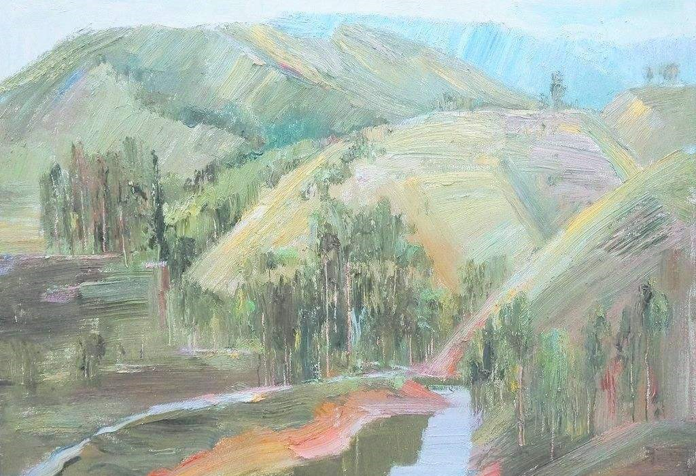

|
|  | 山行 远上寒山石径斜，白云生处有人家。 停车坐爱枫林晚，霜叶红于二月花。 |
词句注释 （1山行：在山中行走。 （2)远上：登上远处的。 (3)寒山：深秋季节的山。 (4)石径：石子的小路。 (5)斜：为倾斜的意思。 (6)深：另有版本作“生”。（“深”可理解为在云雾缭绕的的深处； “生”可理解为在形成白云的地方） (7)车：轿子。 (8)坐：因为。 (9)霜叶：枫树的叶子经深秋寒霜之后变成了红色。 (10)枫林晚：傍晚时的枫树林。 (11)红于：比……更红，本文指霜叶红于二月花。 |
|
白话译文 沿着弯弯曲曲的小路上山，在那白云深处，居然还有人家。 停下车来，是因为喜爱这深秋枫林晚景。枫叶秋霜染过，艳比二月春花。 |
|

唐诗学习网 Copyright© 2018 All Right Reversed
|